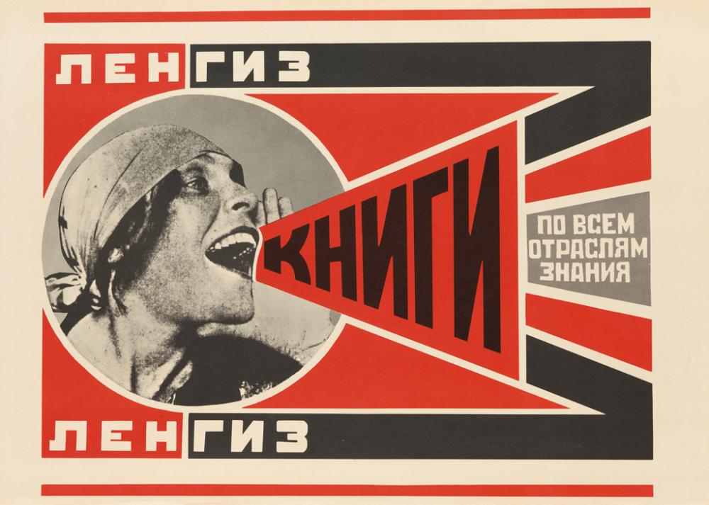
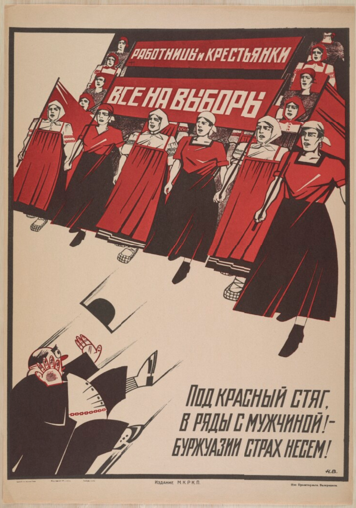

"Beat the Whites with the Red Wedge"
1919
Following the violent overthrow of Russia's monarchy in 1917,
civil war erupted between the anti-communist White Army
and the Bolshevik Red Guard. At the time of this poster's
printing, the Civil War had been raging for two years,
and there was a stronger need than ever for morale building
and recruitment to the Bolshevik movement. Pro-communist
designers and draftsmen such as El Lissitzky took up the task
of creating agitation-propaganda (agitprop for short) like
that shown above to rally the masses. El Lissitzky was part
of the Suprematist and Constructivist movements which
emerged early in the Revolution and made use of largely or
totally abstract compositions to convey their messages. The
symbolism in this poster is clear and immediately impactful,
with the red wedge piercing the white circle representing
the defeat of the pro-imperialist White movement by the
communist revolutionaries.
Depicted in this poster is a proposed, but never constructed
monument to the Third International (a.k.a. the Communist
International) which had been founded a year earlier. Nikolai
Punin's depiction of Tatlin's planned structure is decidedly
Constructivist, but it does appear to have been influenced by
the Dada movement which arose after the onset of the first World
War. The superposition of images and text, while not necessarily
unique to Dada, was a popular technique within the movement,
and the Dada movement had similarly radical, left-wing
underpinnings.
"Monument III Internationale"
1920

"The Illiterate is Like a Blind Man"
1920

This poster from the same year is advocating for the education
of the general public. Prior to the Revolution, the population of
Russia was predominantly peasant farmers with little if anything in
the way of formal schooling. As a result, one of the key aims of
the revolutionaries was to improve the material and social conditions
for workers throughout the country by providing things like free
public education. The poster itself draws heavily on lubki, a
traditional style of russian woodblock prints, often depicting
popular stories and folk tales. This decision was likely a deliberate
attempt by Radakov to create an image that was at once familiar
and relatable to its audience, who may have had limited literacy.
In the same fashion as many WWI recruitment posters, this piece
makes a direct appeal to its audience, asking that they take up arms
for the workers' movement. While the similarity to other such posters
is striking, in this instance it is done in the usual Bolshevik style
involving the heavy use of red ink, which was cheap as well as symbolic
of the socialist cause. This poster also features a backdrop of bustling
factories representing the recent and rapid modernization of industry
which was occurring in the Bolshevik-controlled portion of the country.
"Have You Registered as a Volunteer?""
1920

"Long Live the Fifth Anniversary of
the Great Proletarian Revolution"
1922

By 1922 the Russian Civil War was finally beginning to wind down,
and the treaty that officially established the USSR was approved.
In this poster we see a worker triumphantly holding up the hammer
and sickle which became synonymous with the Union. Behind him,
workers of seemingly every ethnicity holding red flags alongside
major landmarks of several countries are depicted implying
a global revolution which was never to come to fruition.
In 1923 the Russian Revolution finally ended. No longer was
the chief aim of poster designers agitation and recruitment of
workers to the cause. Now designers, like Constructivist Alexander
Rodchenko, set about creating advertisements for state industries.
In this poster we can see an airplane surrounded by abstract red
and black shapes as well as important information about the airline
itself. Many posters of this nature were produced for a wide range
of products and services.
"Dobrolet (Poster for a Russian state airline)"
1923
"Books (Please)! In All Branches of Knowledge"
1924

Rodchenko designed this poster to advertise the Leningrad
Publishing House. In its shape we can see the same motif of the
red wedge and the circle from El Lissitzky's famous work. Once
again, within the Russian communist movement there was a massive
push for widespread public education, and of particular note here
is that the peasant depicted here calling for books is a woman.
Under the Russian monarchy, women's roles within society were
generally limited to housework and childrearing and so after
rising to power the Bolsheviks used universal education as one
way to help bring about greater gender equality.
Vladimir Lenin died on January 21st of 1924, and his position
as leader of the Communist Party and the Soviet Union was filled
by Joseph Stalin. This poster depicts Lenin standing above a banner
with the opening line of Marx and Engels' Communist Manifesto,
pointing straight ahead with factories in the background. Of note here
is the style in which this poster is rendered. An idealized form of
realism is used here which became appropriately known as Sociualist
Realism. Following Lenin's passing, there was a much greater emphasis
placed on deification of “heroes” of the Revolution, and a growing
distaste for non-representational styles.
"A Spectre Is Haunting Europe, the Spectre of Communism"
1924

"Female workers and peasants, make your way to the voting booth! Under the red banner, in the same ranks as the men, we inspire fear in the bourgeoisie!"
1925

As part of the Bolsheviks attempt to further consolidate their
power going into the election of 1925, the party needed to ensure
sufficient voter turnout in their favor. We can see designers like
Valerianov once again drawing on the theme of political and
social equality of women to rally female voters' support in the election.
Here women are depicted marching confidently with a stereotypically
portrayed member of the bourgeoisie clearly very dismayed by this.
Scenes like this were very common in Soviet posters, and as the Union
became increasingly modernized, scenarios like these were featured in
popular films as well.
In this final poster, we can see a noticeable shift towards a
more aggressive tone in the message being conveyed. Whereas before,
aggression was directed either towards a political enemy, or the
wealthy elite generally, now there is seemingly a veiled threat to
the workers themselves. Even though the message is intended to be
metaphorical, it is a definite departure from the veneration of the
proletariat that occurred in prior posters, and represents an increase
in the authoritarianism of the Soviet state under Stalin. Stylistically,
there is still a strong Constructivist basis, although it is worth
noting that as time went on the Soviet Union became increasingly
intolerant of more abstract styles, preferring the Socialist
Realism we see in the poster of Vladimir Lenin from above.
"We Smite the Lazy Worker"
1931